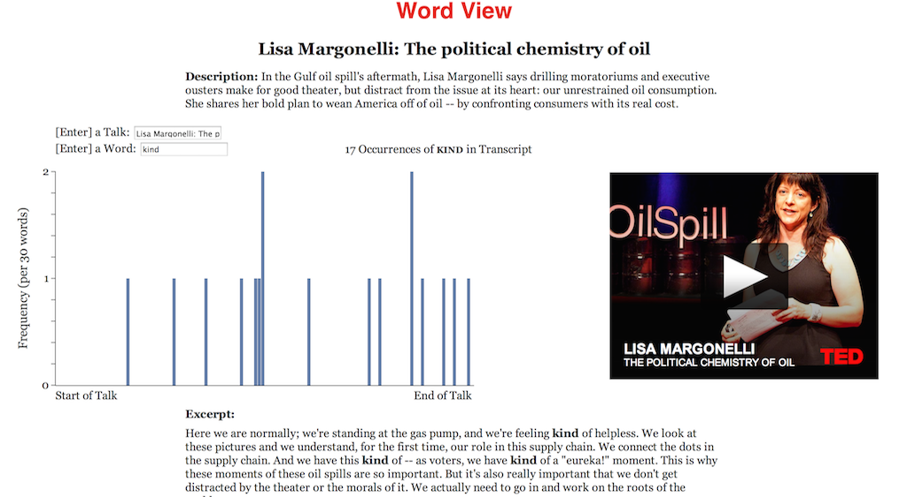

Discover TED
WordView
Dogeify TED
Welcome to the Explore TED.
On your left you'll find 3 visualizations that we created to explore the world of TED talks. This was done as a part of our Information visualization class(HCDE 511).
Following the "Rapid Iterative Testing and Evaluation" method we created a Tabelau visualization that can help you find a talk to watch. We also created an interactive concordance using D3 to explore the words of TED . Finally we created a dynamic doge generator( admittedly our favorite out of the three) which creates a doge meme using the top words in a talk.
Have fun checking them out!
On your left you'll find 3 visualizations that we created to explore the world of TED talks. This was done as a part of our Information visualization class(HCDE 511).
Following the "Rapid Iterative Testing and Evaluation" method we created a Tabelau visualization that can help you find a talk to watch. We also created an interactive concordance using D3 to explore the words of TED . Finally we created a dynamic doge generator( admittedly our favorite out of the three) which creates a doge meme using the top words in a talk.
Have fun checking them out!
Discover TED
Discover TED is an interactive Tableau dashboard. It uses the power of Tableau to help you find the next mindblowing TED talk. Pick a topic from the bubble chart and get a list of the most popular talks within that topic. You can select both the measures used to size the bubbles and list the talks. The embedded video will provide you with instant access to the talk you select.
WordView

Dogeify Ted
such speaker, much talk, very words, wow